第9章 失败¶
第 9 章 失败
失败指的是没有到达目标的任意交易，要么只获得较少的利润，要么亏损，而后者更为常见。对于刮头皮者来说，目标是刮头皮利润，但是，如果交易者预期获得更多利润，而市场未能满足他们的预期，那么尽管产生了一笔刮头皮利润，仍然是一次失败。每一个失败的做多架构都是多头势弱、空头势强的征兆，每一个失败的做空架构都是空头势弱、多头势强的征兆。由于最常见的好架构的成功率约为 60%，所以它们有 40%的失败率。当一个架构失败时，它常常形成一个非常棒的反向交易架构。刚刚被迫离场的交易者们在同一方向重新入场时会有所犹豫，使得市场成为单向市场。另外，当他们认赔离场时，他们驱动市场向相反方向进一步运动。
这一章讨论失败并反转且反转幅度足以做刮头皮交易的一些常见形态。当形态足够大，而且背景正确时，它们有时甚至会引起重要趋势反转。关键是明白，每个形态都有一定的失败率，交易者们应该接受这一事实。把失败看作一个潜在的机会，因为，如前所述，它常常形成一个不错的反向架构。有时，失败将会引出原来架构方向上的一个二次信号。
以下是引出反向交易的一些常见失败：
• 失败的高点 1、高点 2、低点 1、或低点 2。
• 对任意价位的失败突破，比如波段高点或低点、趋势线、或趋势通道线。
• 穿过磁力位的失败，比如测量运动目标、前一波段高点或低点、趋势线、或趋势通道线。
• 失败的最终旗形（反转尝试失败，形成一波突破回撤）。
失败的楔形。
失败的信号棒或入场棒。
失败的单跳动突破。
• 失败的反转，比如失败的双重底或双重顶，或者失败的头肩形态。
• 到达利润目标的失败，比如电子迷你中 5、9、或 17 跳动失败，股票中 11、51、99或 101 美分失败。
有些失败是强趋势的征兆，形成一笔顺势交易：
• 在强多头趋势中，尝试跌破前一棒低点失败，在强空头趋势中，尝试反弹超越前一棒高点失败。这显示出紧迫感，表明趋势强劲。
• 回撤试图到达均线失败。这显示出紧迫感，表明趋势强劲。
• 尝试到达磁力位失败，比如测量运动目标、前一波段高点或低点、趋势线、或趋势通道线。这常常引起一波回撤，然后两次尝试到达磁力位。
如果一笔交易赚到了刮头皮利润（因此，交易者部分或全部离场），然后返回，猎杀原来的信号棒或入场棒止损，那么驱动市场向新的反方向运动的燃料就非常少了，因为在交易中被套的交易者要少得多（他们已经获利出场）。另外，在部分获利之后，很多刮头皮者将会在盈亏平衡点了结剩余头寸，所以他们的止损比原来超出入场棒或信号棒的止损更加紧凑。
虽然微型反转可能是只适合做刮头皮的交易区间内的反转，但是它有时会演变为重要趋势反转，或者成为重要趋势反转的一部分。最为可靠的失败是趋势中的旗形。当旗形形成时，逆势交易者们正希望趋势反转，那是一种低胜率赌注，因为市场拥有惯性，趋势会拒绝反转尝试。举例说明，如果有一轮强多头趋势，然后是一个反转架构，那么有些交易者会做空。然而，如果市场没有向均线做横向至下跌运动，而是以一条多头信号棒形成一个高点 2，那么空头反转尝试很可能失败。这是一个很棒的买进信号，因为你正在一轮较大趋势的方向入场，市场很可能最低测试趋势的前一极点。任意反转形态，包含重要反转形态，都有可能失败，结果趋势恢复。
当交易者们入场交易时，很多人会在超出信号棒 1 个跳动处设置保护性止损。在入场棒收盘后，如果入场棒很强，那么很多人会把保护性止损移至超出入场棒 1 个跳动处。你怎样知道这一点呢？只要观察图表便会看出。观察任意一张图表，找出可能的信号棒和入场棒，看一下当某一棒反转超越它们时发生了什么。大部分时间里，反转将会表现为强趋势棒的形式，而且大部分时间里，运动幅度最少将足以产生一笔刮头皮交易的利润。这是因为，一旦交易者们的保护性止损被击中，被迫认赔退出新头寸，他们就变得更加谨慎，在相同方向重新入场之前，他们希望看到更多的价格行为。这将市场交给单方手中，于是运动的速度通常很快，幅度通常足以做一笔刮头皮交易。
P132
为什么单跳动失败突破如此常见呢？尤其是在电子迷你中。对于股票，失败常常出现在1 到 10 美分突破，具体取决于股票价格和个性。在交易中，每只股票都有不同的特征，大概是因为每天都有很多相同的人交易它，所以一小群成交量足够大的交易者足以推动市场形成重复出现的形态。在疲弱的多头趋势中，如果市场做横向至下跌运动，那么很多交易者会认为，如果当前一棒向上超越前一棒 1 个跳动，交易者们就会使用止损单在那里买进。大部分聪明的交易者们会预期这样。不过，如果另有成交量足够大的交易者们感觉调整幅度必须加大，调整时间必须延长（举例说明，如果他们认为很可能形成一波两条腿运动），那么他们可能会在前一棒高点或其上方 1 个跳动处做空。如果他们的成交量压倒了新多头，而且没有足够的多头出来营救，那么市场很可能会下跌一两个跳动。
此时，新多头正感到紧张。如果他们的入场是在一个这样棒的价位，为什么没有更多买进进入呢？另外，现在市场又便宜了一两个跳动，对于打算做多的交易者们来说，这应该看起来更有价值。这应该迅速驱动价格上涨，但是，市场下跌的时间越长，甚至只是下跌一两个跳动，就有更多新多头变得担心，担心它们的预期可能是错误的。有些人开始在市价抛出，增加了供给，有些人会在下方一两个跳动设定卖出离场单，或许是根据 1 分钟或 3 分钟图设定这些订单，离场点位于最近一棒的下方 1 个跳动处。一旦这些订单被击中，这些新买家也变成了卖家，推动价格进一步下跌。另外，原来的空头感觉到新多头被套，很多人会加大自己的空头头寸。随着价格下跌 3、4 或 5 个跳动，被止损踢出的买家们从打算买进转变为等待更多价格行为展开。在买家缺乏的情况下，价格将继续下跌，寻找足够的买单以便满足卖家。在某个点处，卖家们将开始平仓获利，延缓了价格的下跌，买家们再次开始买进。一旦买压胜过卖压，价格将再度上涨。
当 5 分钟图上的单跳动失败突破出现于交易区间内时，它常常也是较高时间框架上的单跳动失败，比如 15 分钟或 60 分钟图。如果那样的话，那么为什么 60 分钟图上没有那么多单跳动失败突破呢？那是因为，5 分钟图上的很多单跳动失败突破会回撤很多棒，然后再次突破。结果是尽管当 60 分钟棒正在形成时在 60 分钟图上出现了一个单跳动失败突破，但是在那一棒收盘时，突破幅度超过了1个跳动。
对于新手们来说，单跳动失败是常见的亏损原因。他们会看到自己心目中的好架构—举例说明，一个买进架构——他们非常自信地在前一棒高点上方 1 个跳动处设定一张买进止损单。或许就在均线上方有一个双棒反转，但是它与前两棒完全重叠，而且做多入场位于小型交易区间的顶部。新手们将看到强多头趋势棒并买进，但是老手们知道，这种类型的双棒反转通常是多头陷阱，他们很可能在新手们买进的价位做空。不出所料，市场上涨，击中新手们的入场买进止损单，使他们做多。然而，下个跳动却是下跌，然后跌幅达到两个跳动，3个跳动，30 秒之内，当他们看到自己的保护性止损被击中时，他们损失了两点。他们奇怪怎么会有人刚好在他们买进的价位卖出。那是一个多么棒的架构啊！
这些陷阱很常见。另一个例子是在空头趋势中，新手们会在出现看涨力量前买进，比如之前快速上涨超越一条空头趋势线，或者在带刺铁丝或空头旗形顶部一个实体微小的大型十字星上方买进，他们错误地认为那是一次反转，他们急于在自认为已经过度的空头趋势中过早入场。
另一种常见的情形是在出现一条尾线短小或没有尾线的大型趋势棒时。如果它是一条多头趋势棒，那么很多交易者会把他们的保护性止损设在它的下方 1 个跳动处。在接下来的 5到 10 棒，市场常常会下跌，击中止损，将交易者们套出，然后在趋势棒的方向反转上涨。
新手们没有认识到的是，很多大型玩家把这些看作很棒的做空架构，他们乐于做空，知道只有弱手们才会买进，当弱手们被洗出时，他们会帮助驱动市场下跌。单跳动失败是市场正打算向另一个方向运动的可靠信号，所以寻找允许你入场的架构。上述所有理论对于下跌市场也是正确的，所有单跳动失败有时可能是两个跳动，在一只$200 的股票中，甚至是 10个跳动。
突破测试常常会精确地测试入场价位，将弱手们套出，接下来他们不得不追逐市场运动，在一个糟糕很多的价位重新入场。突破测试可能会距离盈亏平衡 1 个跳动，有时会超越盈亏平衡止损一两个跳动，但是无论哪种情况，如果市场反转回到趋势方向，那么这个试图令市场反转超越原来入场价位的失败尝试都是一个可靠的顺势架构。举例说明，在电子迷你中，如果在一条多头反转棒上方出现一个很强的买进架构，而且市场趋势上涨了 10 棒，不过接下来下跌，那么就要注意观察抛盘接近原来多头信号棒高点时发生了什么。如果出现一棒在信号棒高点上方两个跳动处向上反转，那么它就是错过了盈亏平衡止损 1 个跳动。市场未能将多头洗出。然后，交易者们会在这条突破测试棒上方买进，因为他们把击中保护性止损的失败看作多头正在原来入场价位附近积极买进，保护自己的止损，声明自己很强的征兆。
P133
大部分交易者日都存在大量交易区间价格行为，在失败的波段高点和低点突破提供很多入场机会。当价格向上超越前一个波段高点，且动能不是太强时，在前一棒低点下方 1 个跳动处设定一张止损单在更高高点做空。如果截止那一棒收盘订单未能执行，那么就把订单向上移动至刚刚收盘的那一棒的低点下方 1 个跳动处。继续这样做，直到当前腿形变得非常高，而且具有非常大的动能，这些都是做空前所需的价格行为。等待另一波回撤，至少突破一条微型趋势线，然后准备在一个新的波段高点做空。在趋势日，当微型趋势线突破后，而且出现一条强反转棒时，你还可以在新的波段高点和低点逆向入场。
类似地，对前一波段低点的第一次失败的突破是一个更低低点买进架构。在前一棒高点上方 1 个跳动处设定一张止损单买进。如果订单未能执行，那么就一直降低入场价位至前一棒高点上方 1 个跳动处，但是，如果市场跌得太快，跌幅太大，那么终止上述过程；等待一波突破微型趋势线的小幅反弹，然后考虑在突破至新低失败时买进。
在电子迷你中，当平均每日区间约为10点时，利润目标为4个跳动的刮头皮交易很受欢迎。在趋势中，可能出现一系列成功的刮头皮机会，但是，当市场击中限价单，而且未被执行时，这种五跳动失败是动能损失的征兆。在 1 分钟和 3 分钟图上，这些架构也很常见。为了赚取 4 个跳动的刮头皮利润，需要 6 个跳动的突破（1 个跳动为了止损入场，4 个跳动的利润，通常还需 1 个跳动确保利润目标限价单被执行），因此，如果市场只运动了 5 个跳动便反转，常常表明趋势型交易者们已经失去控制，回撤或反转在即。由于很多交易者还设定限价单捕捉 2、3 或 4 点的利润目标，所以，如果市场在距这些目标 1 个跳动处反转，也是弱势征兆。举例说明，如果市场创出一个重要的日内低点，然后向上反弹，超越信号棒高点 17 个跳动，那么，试图使用限价单在利润达到 4 点时离场的大部分交易者不会被执行，除非市场超越信号棒 18 个跳动。
相反地，如果市场击中 17 个跳动，然后下一棒跌破了那一棒，那么在 1 个跳动之前没有离场的剩余多头现在将考虑离场，结果常常形成一波向下的刮头皮运动。交易者们认为多头正在 1 个跳动之前获利了结，也就意味着多头不确定市场是否会给它们 4 个整点的利润。这种信心的缺乏会引起多头的获利了结和空头的积极做空。多头会继续依靠他们的跟踪止损，希望市场不久会执行他们的 4 点限价订单，但是大部分交易者不愿意冒着 15 个跳动的账面利润转变为两三点利润的风险去赚取那最后一个跳动的利润。这与冒着 10 多个跳动的风险去刮取 1 个跳动的利润是相同的，是一种失败的策略。一旦市场击中 17 个跳动，回撤几个跳动，如果交易者们的获利了结限价单没有被执行，那么他们很可能把利润目标降低一两个跳动，将跟踪止损上调至前一棒低点下方 1 个跳动。如果两张订单都未能执行，而且那一棒形成一个疲弱的或空头收盘，那么他们可能干脆在市价离场。顺便提一句，如果市场在信号棒上方上涨了 16 个跳动，那么大约有 80%的几率到达 17 个或 18 个跳动。这就意味着在达到 16 个跳动后离场通常是不明智的，除非市场跌破前一棒低点，特别是当那一棒是一个做空信号时。
大部分交易者以类似的方式处于潜在的 9 跳动失败。如果交易者们买进电子迷你，试图以两点的利润离场，那么他们的限价单可能高出信号棒高点 9 个跳动。为了执行订单，市场通常不得不多上涨 1 个跳动，即高出信号棒高点 10 个跳动。如果市场击中订单，但是没有执行便开始下跌，那么他们不得不决定是依靠初始止损还是跟踪止损，比如低于最近一条具有不错多头实体的棒线低点 1 个跳动。如果他们的限价单刚好位于某个阻力位，比如先前一个波段高点，而且市场没有快速向上突破，那么他们可能也会快速降低自己的限价单几个跳动。一旦市场击中 9 个跳动，他们就决不应该允许那笔交易转为亏损，因为那样他们就是冒着 8个或更多跳动的风险去博取1个跳动，这将产生一个可怕的交易者方程。
其他包含很多刮头皮者的市场中有类似的失败，比如 SPY 和 QQQ。对于 SPY 和 QQQ，常见的利润目标是 10 个跳动，通常需要超出信号棒 12 个跳动的运动。如果运动幅度只达到 10 个或 11 个跳动（甚至是 8 个或 9 个），然后便反转，那么通常至少引出一波反向刮头皮运动，原因是刮头皮者们被套，将在信号棒或入场棒的反转离场。这种类型的失败在股票中也很常见。举例说明，如果一只股票在一波刮头皮运动中可靠地到达超过 1 美元的幅度，但是接下来两次下跌尝试都没有达到$1.00的目标，那么这常常是一个很好的反向刮头皮架构。
最常见、最可靠的失败之一是穿越趋势线的第一个尖峰。股票交易者们一直在日线图上寻找这些架构，但是它出现在所有时间框架上。举例说明，如果 AAPL 处于一轮强劲的多头市场中，突然得到一个糟糕的收益报告，那么它可能在一天中暴跌8%，在日线图上击中均线。经验丰富的交易者们非但不准备做空，而是常常在那个下跌尖峰的收盘或次日开盘买进。他们看到这个形态，就像是购物者在商场看到商品打折。那只股票刚刚下跌了 8%，“打折”时间不会持续很久，所以他们迅速买进。他们知道大部分反转尝试失败，第一次反转尝试之后几乎总是跟着一个新高，所以他们买进那只股票，尽管他们是在一个强空头尖峰的底部买进。
所有形态都经常失败，无论它们看起来有多棒。当形态失败时，将有被套的交易者被迫认赔离场，通常是在超出入场棒或信号棒 1 个跳动处。对于聪明的交易者们来说，这是一个低风险刮头皮入场机会。将入场止损单设在这些被套交易者们设定保护性止损的位置，你将在他们被止损踢出的位置入场。他们不会急着在原来方向再次入场，那使得市场成为对你有利的单向市场，应该至少引起一波刮头皮运动，通常是两条腿运动。
P134
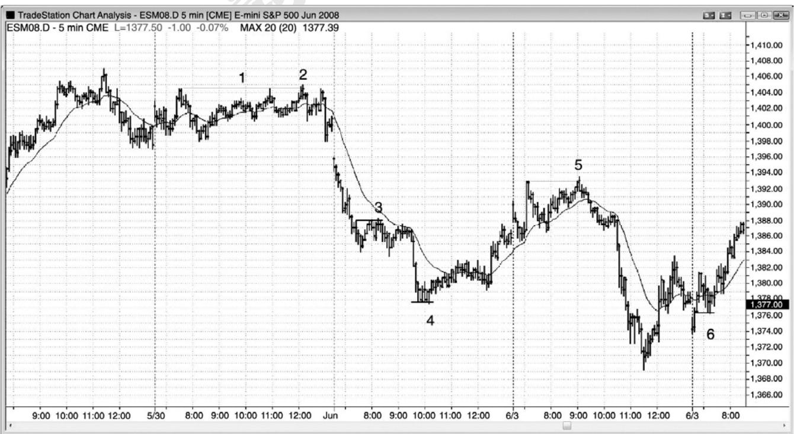
在 5 分钟电子迷你中，引起反转的单跳动和双跳动虚假突破很常见。图 9.1 展示出 6 个实例（棒 1标号比那一棒高出许多）。一旦突破型交易者们使用止损单入场，发现市场正在回撤一两个跳动，而不是立即在他们的方向继续运动，他们就开始设定保护性止损。逆势交易者们看到了机会，刚好在被套交易者们认赔离场的位置入场。大部分突破尝试失败，尤其是当市场处于交易区间内时，而且失败常常表现为单跳动虚假突破。经验丰富的交易者们利用这些突破获利了结或者反向交易，预期交易区间内的大部分突破失败。举例说明，如果交易者在交易区间底部附近买进，那么他很可能是在做刮头皮，预期市场测试区间高点，他常常会在区间顶部设定一张限价单卖出他的多头头寸，并且获利。在强趋势中，他们的做法相反。举例说明，如果市场处于一轮多头趋势中，那么交易者们会使用止损单在区间顶部上方买进，因为他们预期出现另一条上涨腿。
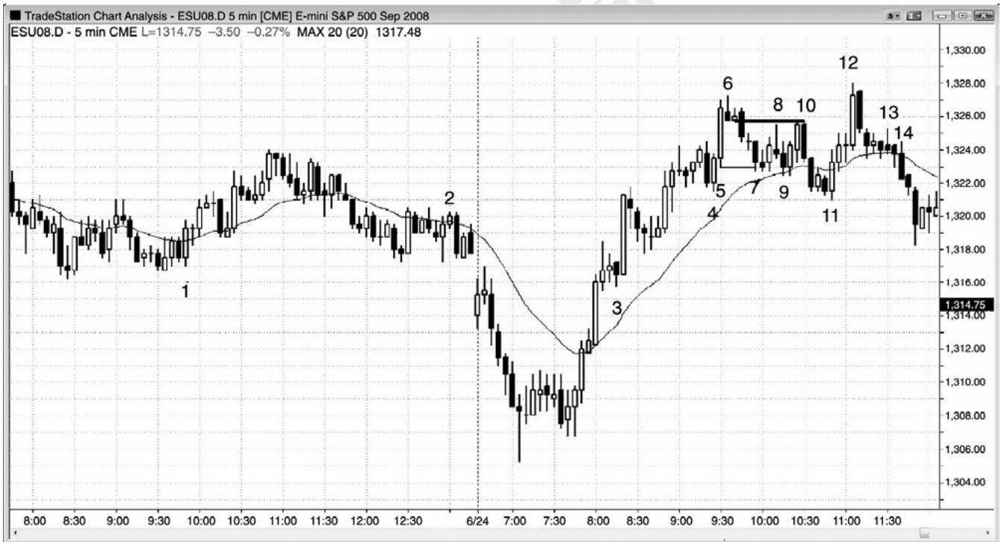
如图 9.2 所示，电子迷你中这两天形成很多单跳动陷阱。
棒 1 是一个单跳动失败的低点 2，成为从太平洋标准时间上午 8:55 开始的那个楔形多头旗形的突破回撤入场。
棒 2 是带刺铁丝形态中的一个单跳动失败的高点 2，被套的交易者们本以为他们等待在一条大型外包棒上方买进是相当保守的，没想到却是在一条水平均线下方的交易区间顶部买进而被套。该形态成为一个双重顶空头旗形。
棒 3 是一个单跳动失败反转，出现在一轮失控的多头趋势中，聪明的交易者们正等着在任意回撤买进。他们正在那一棒低点下方买进，那里刚好是弱势空头做空的位置，弱势空头认为市场向上突破开盘高点后正在向下反转。
棒 4 跌破 3 棒之前的小型波段低点 1 个跳动，形成一个高点 2 做多架构。
棒 5 是一条大型多头趋势棒，所以它的低点下方 1 个跳动处可能存在止损。棒 7 跌破棒5低点1个跳动，猎杀那些止损。多头有能力将市场保持在多头尖峰的底部棒4上方。
棒 9 又低了 1 个跳动，把那些认为它是一个更低高点做空架构的交易者们套入，但实际上是一个横盘多头旗形。
棒 10 向上超越棒 6 做空入场的盈亏平衡保护性止损两个跳动，猎杀那些保护性止损。它与棒 8 形成一个双重顶空头旗形。
棒 14 是最可靠的单跳动失败之一——失败的低点 2，新手们错误地认为它是一个多头回撤。这是一个完美的陷阱，引起一波很强的下跌运动（未给出）。他们没有注意到截止棒 11的回撤突破了趋势线，然后在棒12形成了更高高点测试。另外，从高点开始，形成5条空头趋势棒和一个十字星，而且在棒 13 高点 1 之后没有趋势线突破。在更高高点处的双棒反转之后，这是一条空头通道，因此，在棒 2 信号棒上方，空头数量很可能多于多头。记住，高点2 本身并不是一个买进信号。它是多头趋势顶部的一种买进信号，但这里多头结束已经结束。市场现在要么处于交易区间内，要么处于空头趋势内。高点 2 也是交易区间内的一种买进信号，但只是在区间底部，不是在靠近顶部的位置。
图 9.3 超越信号棒和入场棒保护性止损的突破
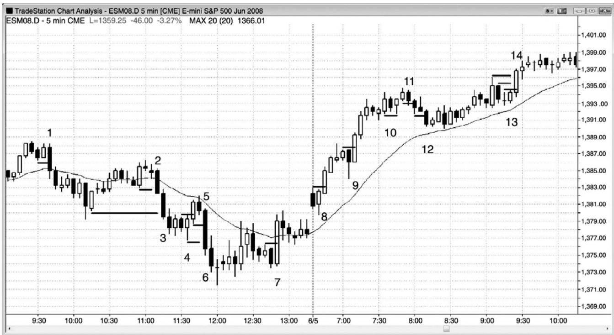
观察一下图 9.3 中当市场穿越水平线时发生了什么，水平线超出信号棒和入场棒 1 个跳动，很可能是交易者们设定保护性止损的地方。大部分时间里，形成一条趋势棒，运动幅度大到足以做一笔可获利的刮头皮交易。这张图上的很多失败都是弱势架构的失败，聪明的价格行为交易者们不会选择它们。然后，足够的交易者们选择它们，所以当他们被迫认赔离场时，他们推动市场反向运动。举例说明，在棒 4 反转棒做多的交易者们会将他们的保护性止损设在入场棒或信号棒下方。那两种止损都被棒 5 空头趋势棒所猎杀，聪明的空头把入场止损单设在那些位置，至少赚得一笔刮头皮交易的利润。因此，如果那一棒的极点被测试但是没有被超越，那么那些止损就是被测试但未被击中，交易常常是获利的。如果它是一个做多入场的保护性止损，测试时相差 1 个跳动，那么实际上形成一个双重底多头旗形，第一个底部是信号棒或入场棒的底部，第二个底部是返回那一价位但是未能触发保护性止损的那一棒。
图9.4 失败的利润目标
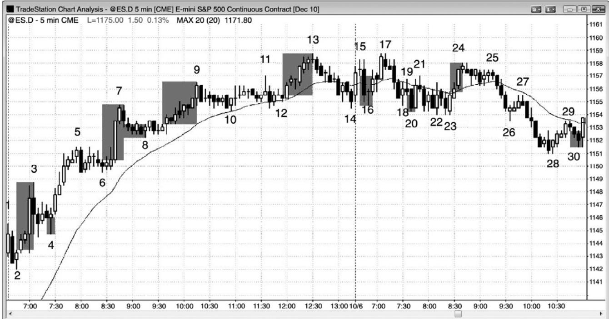
P136
当市场击中获利了结限价单后回撤时，大部分交易者的限价单不会被执行。然后，当市场停止或回撤几个跳动时，这些交易者中有很多人会在市价离场，因为他们不希望冒险损失更多的账面利润。这为调整增加了燃料，常常是市场正试图反转的信号。
如图 9.4 所示，市场在棒 2 上方上涨了 21 个跳动，然后向下反转。在棒 2 上方 1 个跳动买进的有些交易者，设定限价单在获利5点后离场，即高出信号棒高点21个跳动处，但是，大部分订单不会被执行，除非市场再上涨 1 个跳动。相反地，市场反转，那些交易者中的很多人快速离场，他们努力去挽救尽可能多的利润，而不是眼睁睁看着市场返回他们的入场价位。
对于在棒 6 买进信号棒上方 1 个跳动处买进的多头来说，棒 7 是一个 17 跳动失败。很多试图赚取 4 点利润的交易者，看到市场到达信号棒高点上方 17 个跳动处他们的限价单所在价位，一旦市场跌破那一棒低点，他们就迅速离场。而那些正确地认为趋势强劲的交易者们，则会把多头头寸波段化，而不是在达到 4 点利润后离场，他们会依靠盈亏平衡止损。一旦市场向上超越棒 7 高点，他们就会把止损跟踪调整至棒 8 下方 1 个跳动处，棒 8 是最新的更高低点。
棒 4、8、20 和 30 是空头交易的五跳动失败实例。大部分空头需要市场下跌至信号棒底部下方 6 个跳动，才能让他们利润目标为 4 个跳动的获得了结限价单得以执行。有些交易者的订单会被执行，但大部分不会。
对于在棒8上方买进、希望赚取3点利润的多头而言，棒9是一个13跳动失败。
对于试图赚取两点利润的交易者来说，棒 16 和 24 是 9 跳动失败。他们不会让那些交易变为亏损，所以会跟踪调整他们的止损。举例说明，他们会在棒 17 低点下方 1 个跳动退出在棒16信号棒入场的多头交易，或者可能在棒17的空头收盘退出。他们可能会在棒24后面第二棒那条空头棒下方 1 个跳动处退出在棒 23 买进信号棒上方入场的多头交易。
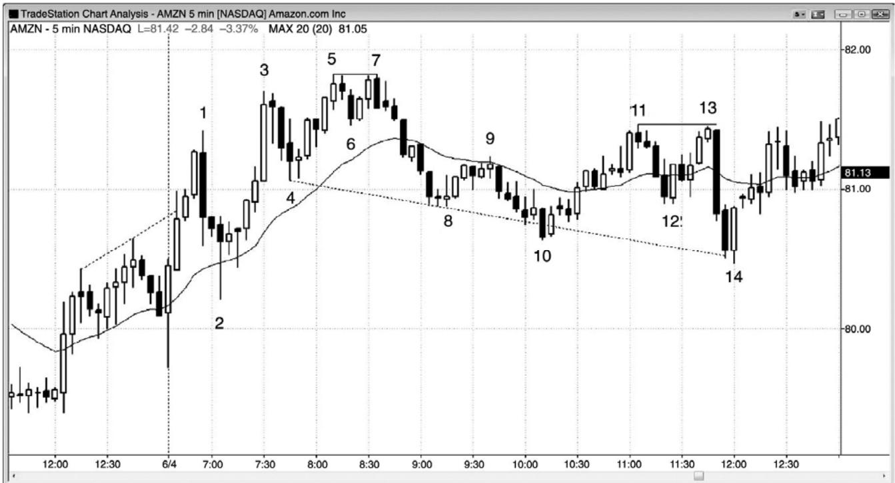
P137
当存在强双向交易时，对波段高点的向上突破和波段低点的向下突破通常都会失败。
如图 9.5 所示，截止棒 1 的反弹非常强劲，但是由于开盘反转常常是迅猛的，而且它是一个更高高点（向上突破了靠近昨日收盘的波段高点），向上突破了一条多头趋势通道线，所以它是一个合理的做空架构。
棒 1 波段高点之后的棒 2 回撤非常陡峭，而且自开盘起的棒线都都比较长，差不多都有较长的尾线。在多头趋势明确形成之前，存在剧烈的双向交易，交易者们应该认为多头和空头都很活跃。由于仍然没有证据表明这是一个多头趋势日，所以应该作为交易区间日交易。
由于棒 3 是一个波段高点，而且位于前一波段高点上方，所以它是一个更高高点。截止棒 3 的上行动能非常强劲，所以在没有二次入场或强反转棒的情况下不能考虑做空，但是，如果交易者做空话，那波下跌运动的幅度是26美分，还是可以获得微小的利润。
棒 5 是一个更高高点，一个合理的做空架构，特别是由于它拥有两条小型腿（中间有一条空头趋势棒，代表着从棒 4 开始的第一条腿的结束）。市场在向上回转前仅仅下跌了 18 美分。灵活的交易者可能有所获利，但是大多数人勉强以 4 美分的亏损离场。
棒7是同一波上涨运动的一部分，所以它是一个二次入场（一个低点2）做空架构。棒7与棒 5 形成一个高点相同的双重顶，实际上是一个平头三推上涨形态（棒 3、5 和 7），所以很可能形成两条下跌腿。
棒 10 是一个更低低点，也是可能的较大多头趋势中的第二条腿。它的低点位于棒 2 低点上方，所以市场可能仍在形成大型的多头趋势波段。多头趋势或横盘市场中的两条下跌腿，特别是水平均线下方的两次下推，常常是很好的做多架构。
由于棒 11 位于棒 9 波段高点上方，所以它是一个更高高点，尽管棒 9 是前一下跌腿的一部分。仍有交易者会在那里交易（做空止损单，突破买进止损单，以及新的空头），因为超越前一波段高点是一种强势的征兆，是交易区间日中潜在的逆向交易机会（预期突破失败，强势征兆缺乏坚持到底）。
棒 13 比棒 11 低了 1 个跳动，是一个双重顶空头旗形，所以是一个做空架构。它是从棒10 开始的两条腿上涨，第二条腿向上超越一条水平均线（棒 11 是第一条腿）。
与棒 10 和 12 处的低点相比，棒 14 是一个更低低点。
顺便提一句，从棒 10 和棒 14 开始的做多架构都未能过冲那条利用棒 4 和棒 8 绘制的空头趋势通道线。这增加了多头交易的成功率。两个都是双棒反转架构。棒 10 是一个楔形多头旗形的底部，棒14是一个扩张三角形多头旗形的底部。
图 9.6 AMZN 中的失败突破
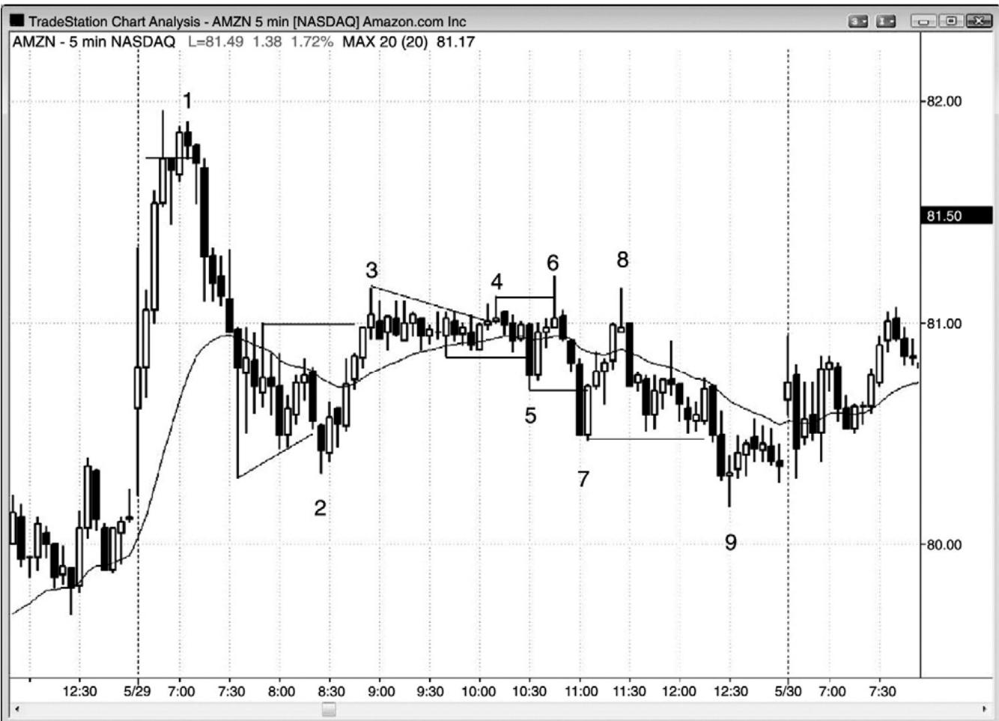
P138
图 9.6 所示的 5 分钟图上，亚马逊（AMZN）形成许多对波段高点和低点的大型单棒失败突破。在开盘暴涨并向下大幅反转之后，多头和空头均表现强势，增加了一天中一方运动会被另一方反转的几率。这使得很可能形成一个交易区间。所有标出的棒线都是失败的突破。紧凑交易区间开始于棒 3 之后，演变为一个小型扩张三角形顶，结束于棒 6，然后演变为一个扩张三角形底，结束于棒 7。从底部开始的反弹未能突破顶部，而是与棒 6 形成一个双重顶，市场下跌，进入收盘。
图 9.7 交易区间突破通常失败
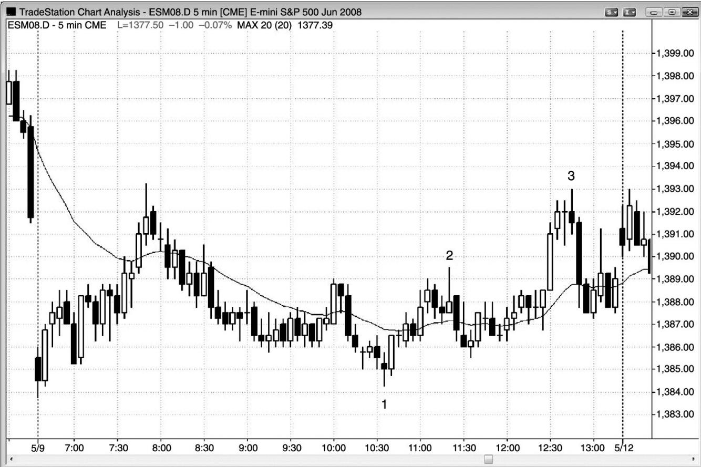
P139
当某个交易日看起来正发展成为一个交易区间日时，交易者们预期突破失败，并且打算反向入场。如图 9.7 所示，截止中午，市场一直处于小幅的横向运动中，那极大地增加了突破失败的几率。棒1、2和3是突破反向架构的二次入场。棒3顶部之前的趋势棒很长，而且伴随着成交量的放大，吸引了大量充满希望的多头，他们打赌那很可能成为一轮趋势。在小区间日，这总是低胜率赌注，在突破处做反向交易，或者寻找强突破回撤，要好得多。截止棒 1 低点和棒 2 高点的突破都比较弱（突出的尾线，重叠的棒线），所以那两次突破都很可能失败。在棒 3 结束的突破，一直没有形成突破回撤给多头一个低风险做多机会，所以唯一的交易是二次入场做空。
图9.8 把交易者们套出好交易
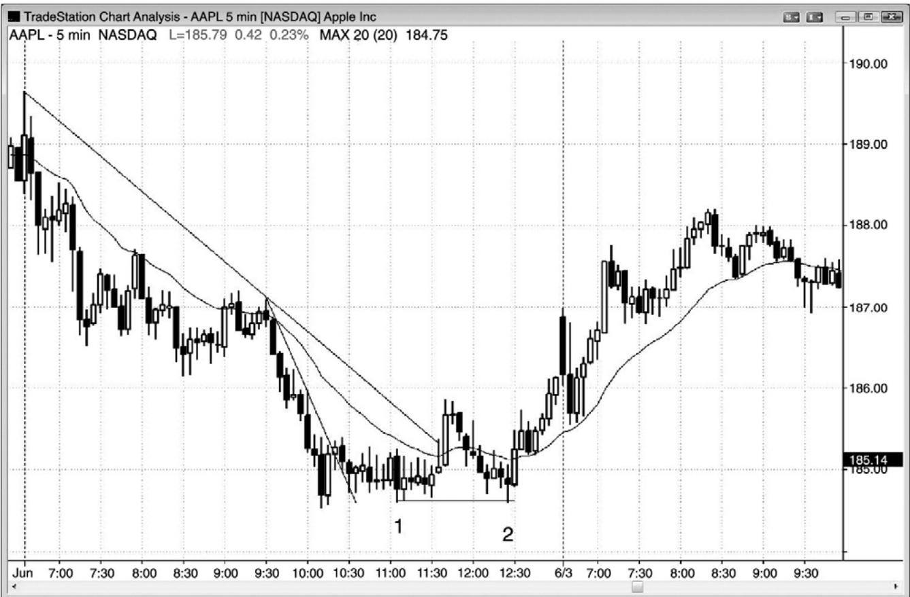
对于日内交易者来说，苹果（AAPL）一直是表现最好的股票之一，但是，像其他很多股票一样，它有时也会在反转开始时通过猎杀止损来将交易者们套出很棒的交易，见图 9.8。
在棒 1 双重底多头旗形买进的交易者们，将在两棒或 5 棒之后当市场超越前一棒高点时入场。市场在均线上方的反弹突破了趋势线，均线缺口棒做空架构引出棒 2 对空头低点的测试。很多多头把他们的保护性止损设在棒 1 双重底多头旗形下方。棒 2 下探至棒 1 下方 1 个跳动处，将多头套出，但是与棒 1 形成一个双重底多头旗形，引起的反转延续到第二天。对棒 1 的失败的向下突破将多头套出，空头套入。截止棒 2 的下跌处于一条紧凑的空头通道内，它是第三次下推，所以是一个高点 3 买进架构。在紧凑通道内，高点 3 是比高点 2 更加可靠的架构，因为通道经常在第三次下推后向上反转。有一点使得这个做多机会特别好，那就是它把新的多头套出，然后立即向上反转，所以他们在心理上很难再次买进。他们将追逐市场上涨，在较晚的时间入场，所以为上涨波段增加了燃料。
图9.9 第一小时内的双重顶和双重底
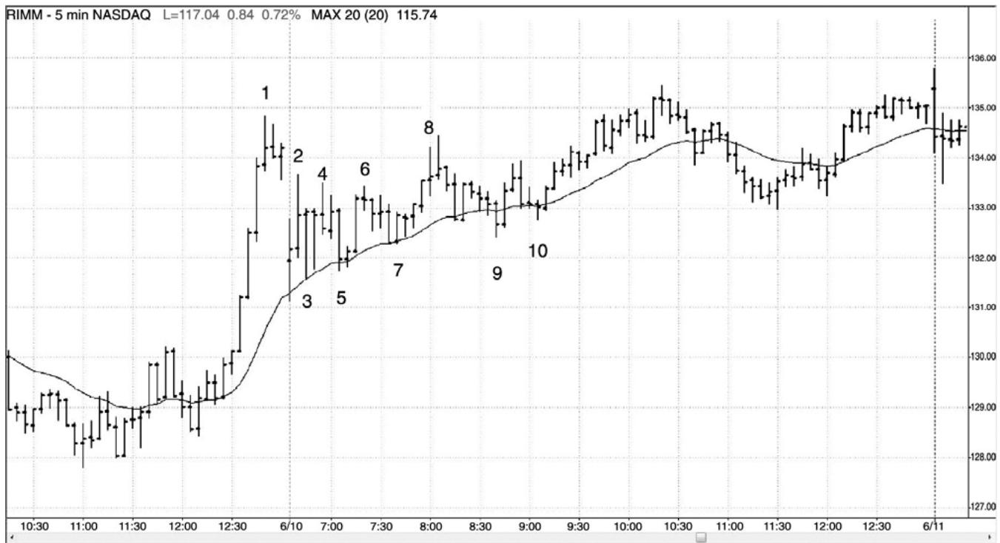
P140
股票常常在第一小时内形成双重顶或双重底（见图9.9）。大部分是可交易的，但总是要将部分头寸以刮头皮了结，并将止损移至盈亏平衡，以防形成失败。
棒2和4形成一个失败的双重顶空头旗形。然后，棒3和棒5形成一个双重底多头旗形。
接下来，你又不得不在棒 4 和棒 6 形成的双重顶空头旗形反转做空，但是你会从做多交易中净赚 70 美分。此时，你知道市场正在形成一个交易区间，比如一个三角形。
棒 7 是又一个失败，却是一个不错的做多架构，因为强运动（截止棒 1 的反弹）之后的交易区间通常是延续形态，棒3、5和7都在均线处找到支撑。
截止棒 9 的下跌包含 7 棒，没有看涨的力量，所以最好等待二次入场，尽管棒 9 是一个更高低点（与棒7相比）。市场很可能不会上涨多少。
棒 10 处的突破回撤是一个完美的二次入场。
图 9.10 失败的双重底多头旗形
Created with TradeStation
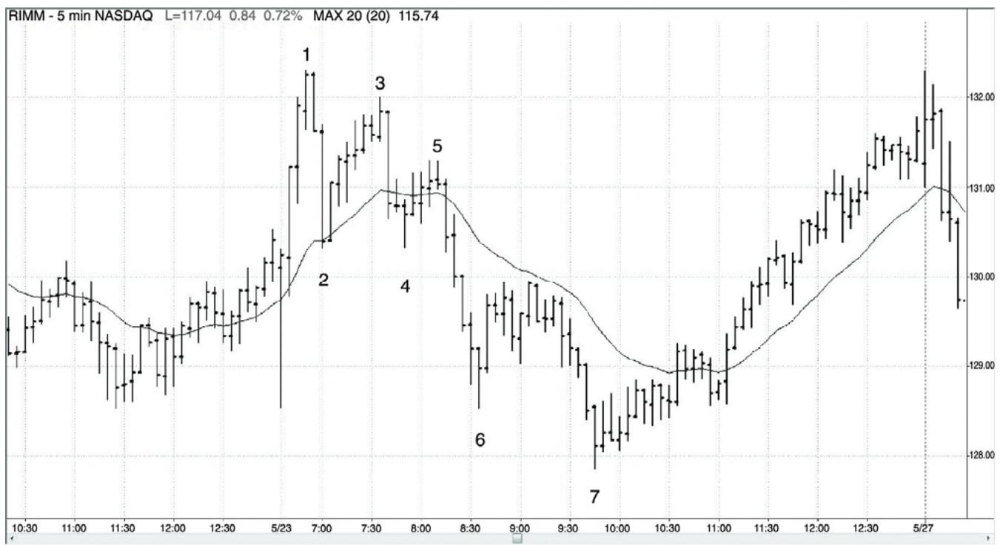
如图 9.10 所示，棒 4 是一个双重底多头旗形入场架构，但是在棒 5 以一个低点 2 失败，棒 5 是截止棒 4 的强空头尖峰之后的回撤。这引起市场对双重底的向下突破，然后形成一波两条腿运动，至棒 7 结束。对于做空有几种选择，比如在棒 5 下方，棒 4 低点下方一两个跳动，向下突破棒 4 的那一棒收盘，或者在下一棒收盘，那是一条很强的坚持到底棒。
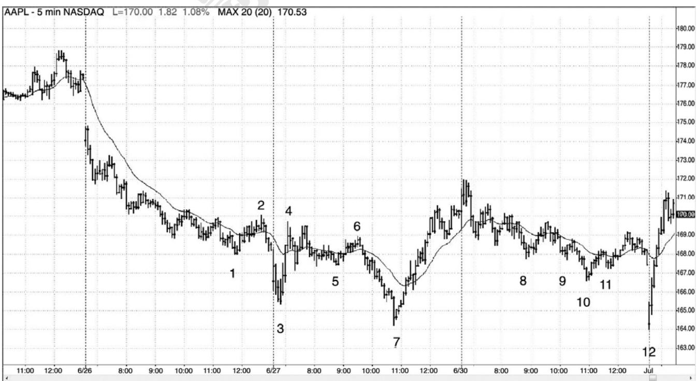
P141
如图 9.11 所示，棒 5 和棒 11 是头肩底的右肩，大部分头肩形态失败，比如在这里（棒1 和棒 9 是左肩）。该形态本身并不足以作为逆势交易的理由。在反转形态之前，你总是希望看到首先出现一些逆势力量。即便那样，也不保证交易一定成功。棒 2 突破一条趋势线，截止棒 4 的反弹很强，尽管它未能超越棒 2 高点，是一种弱势征兆。在棒 5 双重底多头旗形和做多入场之后，虽然大部分聪明的交易者不会在棒 6 失败反转做空，但是他们会将止损移至盈亏平衡，他们认为，如果止损被击中，但交易仍然是好的，那么止损猎杀将会形成一个突破回撤做多架构。此处，止损被击中，但是市场继续下跌。向下突破棒 5 之后的单棒突破回撤是一个很棒的做空架构。棒 5 也是棒 4 尖峰之后的三角形中的第三次下推，该三角形也是一个楔形多头旗形。
棒11右肩是一个买进架构，但是盈亏平衡止损再次被击中。
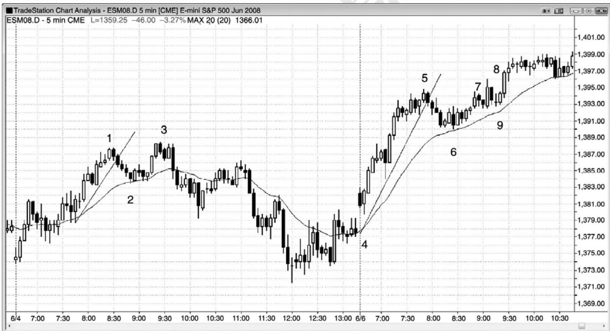
如图 9.12 所示，截止棒 2 和棒 6 的下跌都突破了重要趋势线，因此，在这两种情况下，对前一高点的两条腿测试应该形成一个不错的做空架构。棒 3 低点 2 做空架构是成功的，可以在棒 3 下方做空，也可以选择一棒后的二次入场。
棒 8 做空架构不太确定，原因是测试是由一条大型多头趋势棒（几乎是一条外包棒，因为它与前一棒拥有相同的低点）完成的。外包棒之后入场的传统方式是使用止损单在超出两个极点1个跳动处入场，订单将在突破方向上被执行。不过，外包棒本质上是单棒交易区间，而大部分交易区间突破入场失败。尽量不在外包棒的突破入场，因为风险太高（市场可能向外包棒相对极点运动，运动幅度很大）。由于这是一个双棒反转，所以最安全的入场是在两棒之中较低一棒的下方，这里是那条大型多头趋势棒，市场常常会跌破那条空头棒，但是不会把两棒都跌破，这里便是如此。
P142
如果你在棒 8 突破那条内包棒时做空，那么到那一棒收盘时（一条十字星棒，表明没有决心）你就会变得紧张起来。但是，大部分交易者不会选择那个做空入场，因为 3 条或更多横向棒线，其中至少一条是十字星，通常产生太多的不确定性（带刺铁丝）。外包棒之前的两条小型棒的幅度较小，其作用就像是十字星，所以最好等待更多价格行为。然而，如果你没有在棒 8 做空，那么你就必须相邻很多人已经做空，而他们的入场棒的十字星收盘使得这些交易者们对自己的头寸感到不适。他们会快速离场，从而变得被套。他们很可能会在棒 8 入场棒上方 1 个跳动处买回他们的空头头寸，在看到更好的价格行为前，他们不愿再次做空。当空头买回他们的头寸而离场时，刚好在他们离场的价位（棒 9，做空入场棒上方 1 个跳动）做多，应该是一笔很好的刮头皮交易，而且很可能形成两条上涨腿。交易者要么会在棒 9 上方 1 个跳动处买进，要么会在棒 9 后一棒上方 1 个跳动处买进，依据是棒 9 是一条多头趋势棒，因此是一条很好的做多信号棒。
图 9.13 五跳动失败
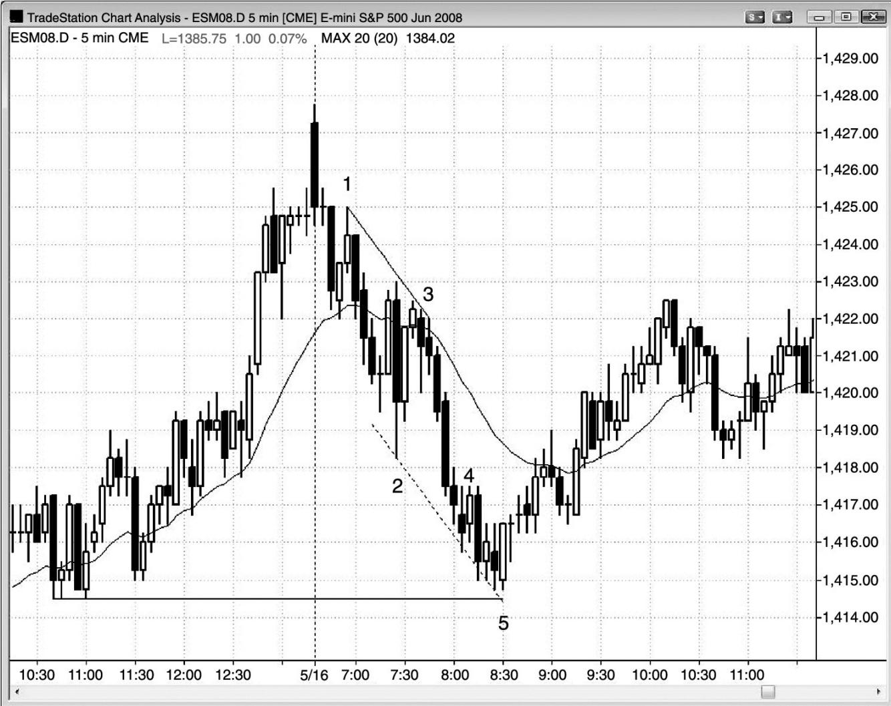
图 9.13 中，做利润目标为 4 个跳动的空头刮头皮在几乎两个小时中都是成功策略。然而，从内包棒棒 4 开始的空头交易只下跌了 5 个跳动，然后便向上反转。这就意味着很多空头的利润目标限价单未能执行，空头快速在盈亏平衡点离场，当然是在棒 5 上方。市场正在测试昨日低点，它是第二次向下刺穿趋势通道线（根据棒1到棒3的趋势线绘制）。多头正在寻找理由买进，失败的空头刮头皮正是他们希望看到的理由。
图 9.14 QQQ 中的失败信号
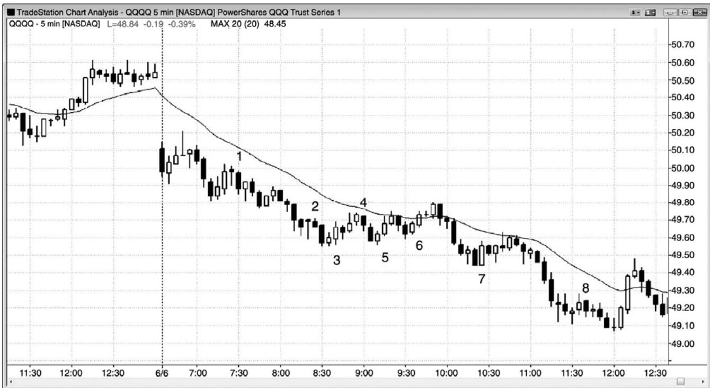
P143
如图 9.14 所示，这些 5 分钟 QQQ 交易中的每一个，在失败之前都达到了 8 至 11个跳动。在所有这些交易中，保护性止损都会让刮头皮者们在盈亏平衡点附近离场，但是，尽管做了很多工作，却几乎没有收获。显然还有其他很多可获利的刮头皮交易，但是，如果有太多不成功的交易，刮头皮是很累的。这常常使得交易者失去中心，错过可获利的交易。在一个明确的空头趋势日，最好的方法是只做顺势交易，并且准备在低点 2 架构卖出，特别是在均线处。你的胜率将会很高，允许你有一种健康的态度并继续选择入场，尽可能地把头寸全部波段化。
图9.15 切换到较小的目标
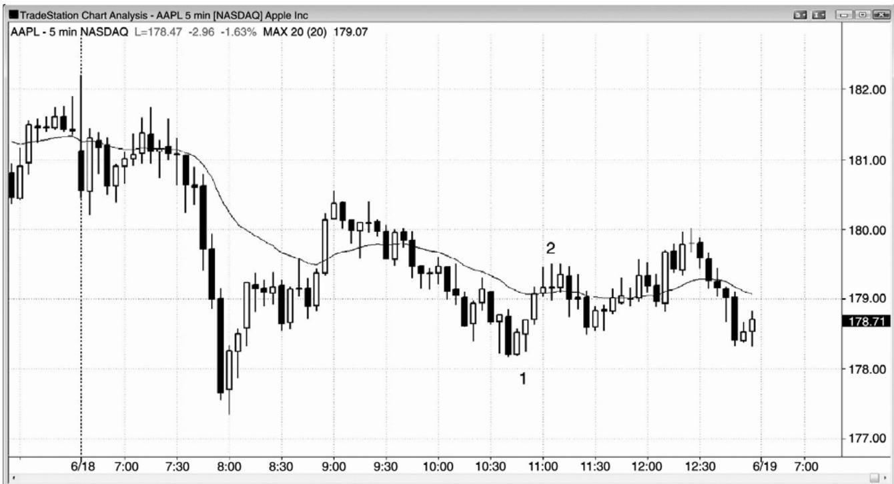
AAPL通常产生$1.00的刮头皮利润（运动幅度通常大于$1.00，允许交易者使用$1.00限价单部分获利了结）。但是，如图 9.15 所示，棒 2 只在棒 1 入场上方延伸了 93 美分，然后便形成一个低点 2 做空架构。这个低点 2 意味着市场两次尝试到达目标均告失败。市场基本横盘，刚刚错过$1.00 的刮头皮，交易者们很可能会把利润目标降至 50 美分左右。他们能够在这一波 61 美分的下跌中部分获利了结。
图 9.16 空头尖峰可能是买进机会
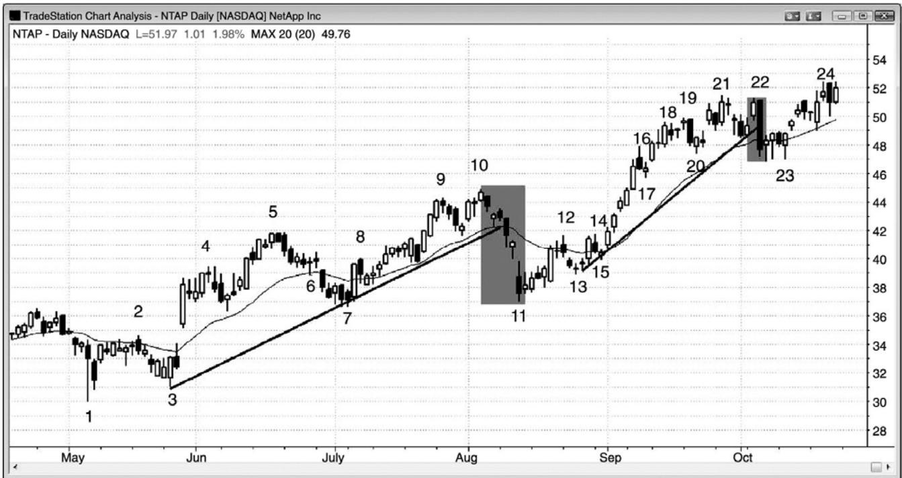
P144
如图 9.16 所示，在日线图上，NetApp 公司（NTAP）在这轮多头趋势期间暴跌两次，交易者们在下跌时积极买进。仅仅因为出现一个跌破趋势线的强下跌尖峰，并不意味着趋势已经结束。大部分反转尝试看起来很棒，但大部分失败。因此，经验丰富的交易者们会在市场暴跌时积极买进，甚至是在空头尖峰的底部。棒 11 是一波幅度达 16%的下跌的底部，但它仍是一个更高低点，并且与棒 7 构成一个双重底多头旗形。由于下降通道持续了很多棒，所以等待在棒 13 更高低点或向上突破棒 14 低点 2 架构时（一个失败的双重顶空头旗形）买进更为安全。
棒 22 是一条非常强的空头趋势棒，向均线下跌，但是从棒 15 到棒 19 的上涨非常强。那条空头趋势棒或许是由某些骇人听闻的报道引起的，但是一条强空头趋势棒并不会制造反转。大部分时间里，它将失败，引出一个新的趋势高点。多头认为市场更可能进入交易区间并创出一个新的高点，而不是成功反转，因此他们在那一棒的底部买进。它的低点也与棒20构成一个双重底，可能正在成为一段交易区间或一个双重底多头旗形的底部。那条空头棒带有坚持到底，横盘运动形成 4 条重叠棒，它们都有突出的尾线。这不是空头反转通常看起来的样子，空头买回他们的空头头寸。他们的买进，加上多头在此处的买进，引出一个新的趋势高点。
图 9.17 大部分趋势反转尝试失败
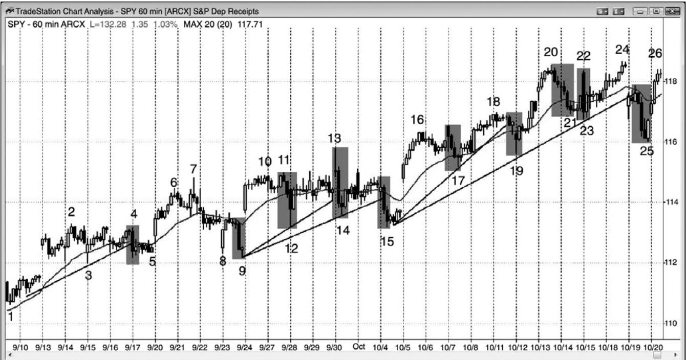
如图 9.17 所示 SPY 的 60 分钟图，当一轮多头趋势很强时，它具有惯性，拒绝结束趋势的尝试。过于急切的空头把均线下方和趋势线下方的强空头尖峰看作市场正在向空头趋势反转的征兆。多头把每个空头尖峰都看作买进架构。他们知道，成功反转不只需要一个强空头尖峰。他们相信每个反转都会失败，因为大部分反转失败，市场越长越高，所以他们急于在回撤买进。当 SPY 仅下跌 1%或 2%时，多头快速买进，因为他们知道打折时间不会太长。那些尖峰中有许多是由真空效应产生的。多头希望在回撤买进，因此，如果他们认为市场会再下跌一点，那么他们会停止买进。这允许空头驱动市场快速下跌。一旦跌至足够低的价位，多头认为市场不会跌得更低，他们突然冒出，积极买进。他们战胜了空头，于是空头不得不买回他们的空头头寸，增加了反弹的力量，巨大的空头尖峰没有坚持到底。
P145
虽然尖峰形成时非常吓人，但是，如果交易者们明白正在发生什么，他们会在底部积极买进。如果他们不希望承担很大的隔夜风险，那么他们会在每个空头尖峰的底部买进看涨期权，并且在几天后的每个新高获利了结。
图 9.18 失败有时是强势征兆
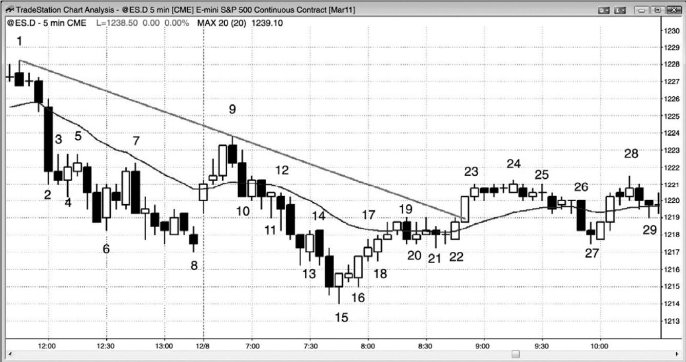
如图 9.18 所示，从棒 15 开始的更低低点重要趋势反转很强，很可能至少形成两条上涨腿。然而，截止棒19的反弹未能到达空头趋势线。市场上推超越均线，进入那条空头趋势线的磁场范围之内。这给了交易者们在棒 22 高点 2 架构上方买进的信心，因为他们认为市场应该测试那条趋势线上方。
棒 4 是强空头尖峰中的一条多头反转棒。尖峰的强度足以说服交易者们市场处于总在场内空头状态，所以交易者们正准备在反弹做空。由于他们不认为棒 4 会引起重要反转，所以很多空头在它的高点及其上方设定限价单做空。足够多的交易者如此急切地做空，以至于他们在它的高点下方 1 个跳动处做空。市场一直没有向上超越多头信号棒的高点，表明空头很强。市场跌破低点 2 空头信号棒棒 5。类似的情形形成于棒 10 后一棒的高点，以及棒 11、13和 26。棒 18 是看涨的。交易者们如此急切地做多，以至于他们在棒 18 前一棒的低点及其下方设定买进限价单，最激进的多头将限价单设在棒 18 低点上方 1 个跳动处，他们很可能是唯一一批入场的多头。其他人不得不追逐市场上涨。
棒 27 在棒 21 低点上方 1 个跳动处向上反转，未能形成一个完美的双重底多头旗形。这就表明，当市场从棒 24 高点开始下跌时，急切的多头在棒 21 低点上方 1 个和两个跳动处设定买进限价单。他们如此急切地做多，以至于不希望冒险让棒 21 低点及其上方 1 个跳动处的买进限价单无法执行。当棒 7 在棒 5 高点下方 1 个跳动向下反转时，发生的情况恰好相反。市场未能到达棒 5 高点，因为空头感受到做空的紧迫性，所以那个失败是空头趋势强劲的征兆。棒 7 是对均线的测试，但是空头如此急切地做空，以至于他们在均线下方两个跳动而不是1个跳动处设定做空限价单。这使得那一棒高点未能到达均线，是强空头趋势的征兆。
棒 15 后面的低点 1 未能引出一个新的空头低点，表明向上反转很强。
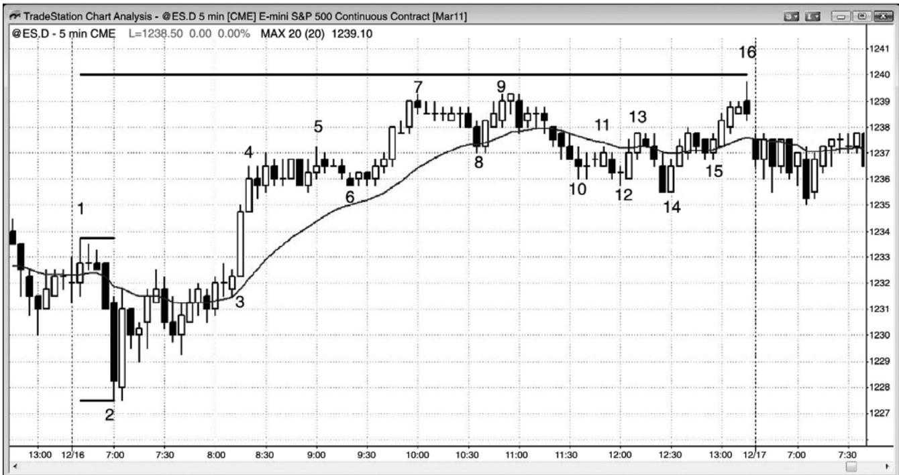
P146
当出现一个相当明显的测量运动目标，市场进入它的磁力作用范围，但是接近程度不足以让交易者们相信它已经被足够测试时，市场常常回撤，然后做一次更有说服力的测试。如图 9.19 所示，今天的电子迷你形成一个趋势型交易区间日，明显的测量运动目标是基于开盘区间的一波向上的测量运动。棒 7 和棒 9 进入距目标 3 个跳动的范围之内，但是大部分交易者感觉那次测试没有完成，除非市场进入距目标 1 个跳动的范围之内。测试未能到达目标，但是足够接近，使交易者们相信磁力正在影响价格行为。交易者们希望看到市场在测试该目标后回撤，还是向上突破，上涨至某个更高的目标。市场在棒 14 回撤，进入一个小型扩张三角形多头旗形，在当天最后一棒测试目标，距离在 1 个跳动之内。顺便提一句，如果市场向上超越测量运动目标 4 个或更多个跳动，那通常意味着市场忽略了那一目标，正向着一个更高的目标前进。
棒 14 也是一个大型楔形多头旗形的信号棒，其中棒 8 是第一次下推，棒 10 或 12 是第二次下推。有些交易者认为旗形结束于棒 12，但是，与棒 8 和棒 10 之间的距离相比，棒 10 和棒12之间的距离很小，所以很多交易者并不认为调整已经结束。结果形成最后一次下推，在
棒14形成一个更低低点。
从棒 14 开始的三棒多头尖峰向上突破前一 60 分钟棒的高点（未给出）1 个跳动。在 5分钟楔形空头旗形中，当市场在一棒后向下反转时，60 分钟交易者们正猜测他们是否处于一个 60 分钟单跳动多头陷阱中。有些 60 分钟交易者使用止损单在前一条 60 分钟棒的高点上方1个跳动处买进，现在市场正在向下反转。然而，大部分时间里，当60分钟图上正在形成单跳动失败突破时，市场会在那条60分钟棒收盘前向上回转，超越单棒失败突破。结果，虽然单跳动失败突破在 5 分钟图上表现为很多棒，但是截止 60 分钟棒收盘，它却从 60 分钟图上消失了，比如此处。60 分钟棒在棒 15 后一棒收盘，60 分钟棒的最后一个高点比前一 60 分钟棒的高点高出 3 个跳动。
P147